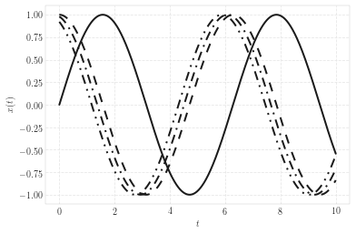
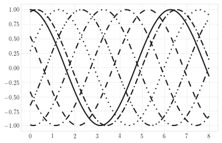
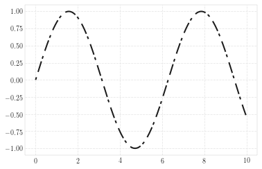

Figure generation for Vibration Testing manuscript¶
In [45]:
%matplotlib inline
import matplotlib as mpl
import matplotlib.pyplot as plt
mpl.rcParams['lines.dash_joinstyle'] = 'miter' # miter|round|bevel
mpl.rcParams['lines.dash_capstyle'] = 'butt' # miter|round|bevel
mpl.rcParams['font.family']= 'serif'
mpl.rcParams['font.serif']= ['cmr10',
'Times New Roman',
'Bitstream Vera Serif',
'New Century Schoolbook',
'Century Schoolbook L',
'Utopia',
'ITC Bookman',
'Bookman',
'Nimbus Roman No9 L',
'Times New Roman',
'Times',
'Palatino',
'Charter',
'serif']
mpl.rcParams['text.usetex']= True
mpl.rcParams['savefig.format'] = 'pdf'
mpl.rcParams['figure.figsize'] = [6.0, 4.0]
mpl.rcParams['figure.autolayout']= False
mpl.rcParams['lines.color'] = 'black'
In [46]:
import numpy as np
import scipy as sp
import vibrationtesting as vt
import vibration_toolbox as vtb
In [121]:
# Make plot black and white from
# https://stackoverflow.com/questions/7358118/matplotlib-black-white-colormap-with-dashes-dots-etc
from cycler import cycler
color_c = cycler('color', ['k'])
style_c = cycler('linestyle', [('-'), '--', ':', '-.',(0,[2,4,8,2])])
# linestyle is solid-gap-solid-gap
style_c = cycler('linestyle', ['-',(0,[5,5]),(0,[5,3,1,3]),(0,[5,3,1,3,1,3]),(0,[5,2,1,2,1,2,1,2]),(0,[1,3]),(0,[5,2,5,2,1,2]),(0,[5,3,1,2,1,3])])
markr_c = cycler('marker', ['','o'])#, '.', 'o'])
c_cms = color_c * markr_c * style_c
c_csm = color_c * style_c * markr_c
plt.rc('axes', prop_cycle=c_cms)
c_cms
Out[121]:
| 'color' | 'linestyle' | 'marker' |
|---|---|---|
| 'k' | '-' | '' |
| 'k' | (0, [5, 5]) | '' |
| 'k' | (0, [5, 3, 1, 3]) | '' |
| 'k' | (0, [5, 3, 1, 3, 1, 3]) | '' |
| 'k' | (0, [5, 2, 1, 2, 1, 2, 1, 2]) | '' |
| 'k' | (0, [1, 3]) | '' |
| 'k' | (0, [5, 2, 5, 2, 1, 2]) | '' |
| 'k' | (0, [5, 3, 1, 2, 1, 3]) | '' |
| 'k' | '-' | 'o' |
| 'k' | (0, [5, 5]) | 'o' |
| 'k' | (0, [5, 3, 1, 3]) | 'o' |
| 'k' | (0, [5, 3, 1, 3, 1, 3]) | 'o' |
| 'k' | (0, [5, 2, 1, 2, 1, 2, 1, 2]) | 'o' |
| 'k' | (0, [1, 3]) | 'o' |
| 'k' | (0, [5, 2, 5, 2, 1, 2]) | 'o' |
| 'k' | (0, [5, 3, 1, 2, 1, 3]) | 'o' |
In [70]:
fig_path = '/Users/jslater/Documents/Vibration_Testing/figsbw/'
In [116]:
t = np.linspace(0,10,1000)
plt.plot(t,np.sin(t),t,np.cos(t),t,np.cos(t+.2),t,np.cos(t+.4))
plt.ylabel('$x(t)$')
plt.xlabel('$t$')
plt.savefig(fig_path + 'sine.pdf')

In [122]:
x = np.linspace(0, 8, 101)
y = np.cos(np.arange(7)+x[:,None])
plt.plot(x, y);
plt.savefig(fig_path+'test.pdf')

In [86]:
mpl.rcParams['axes.prop_cycle']
Out[86]:
| 'color' | 'linestyle' | 'marker' |
|---|---|---|
| 'k' | '-' | '' |
| 'k' | '--' | '' |
| 'k' | ':' | '' |
| 'k' | '-.' | '' |
| 'k' | '-' | '.' |
| 'k' | '--' | '.' |
| 'k' | ':' | '.' |
| 'k' | '-.' | '.' |
| 'k' | '-' | 'o' |
| 'k' | '--' | 'o' |
| 'k' | ':' | 'o' |
| 'k' | '-.' | 'o' |
In [95]:
plt.plot(t,np.sin(t),linestyle = (0,(2,4,8,2)))
Out[95]:
[<matplotlib.lines.Line2D at 0x11e8ad1d0>]
